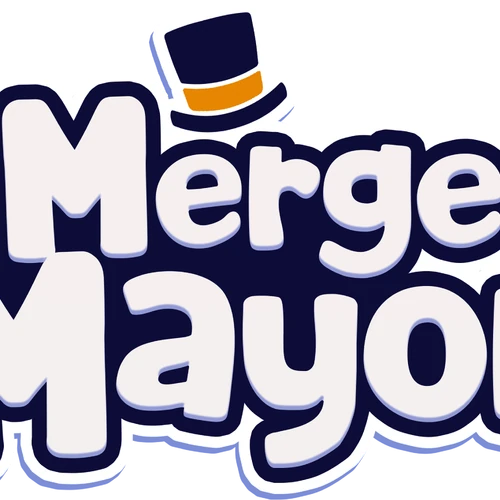

'merge'란 '병합하다', '합치다'를 의미하는 영어 단어로, 머지 게임은 같은 유닛 2개 이상을 합쳐서 더 좋은 유닛으로 만드는 게임 장르를 말한다.
단순한 규칙으로 캐주얼 게임에 속하며, 영미권에서 인기가 있는 장르이다.
Merge Mayor는 내가 좋아하는 합치기 게임 중 하나이다. 가상의 도시의 시장이 되어 여러 가지 물건을 합침으로서 도시를 재건하는 것이 이 게임의 목표다. 합치는 물건은 다양하다. 과일, 공구, 음식 등등. 완성된 구역은 화사하게 변신하고 사람들이 돌아다닌다.